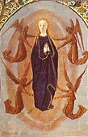
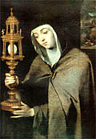

Amy Welborn preguntó a los lectores de su blog qué libros habían tenido mayor impacto sobre su fe y sobre sus vidas.
Muchas respuestas, interesantes de leer (sobre todo para una rata de biblioteca como es uno). Me parecieron buenas respuestas, en general. Demasiados autores anglo-yanquis para mi gusto, pero se trata de esos lectores; y, por consiguiente, algo recargado de apologética el listado, pero también es natural.
Me resultó refrescante, entre todo ese material, uno que nombró un sólo libro: "El idiota", de Dostoyevsky .
También está interesante -y es bastante representativo como muestra- el listado de libros recomendados de Mark Shea. Algunos de los nombrados, como Weigel (que no leí, aclaro), no me caen muy bien que digamos; pero la inclusión de Wodehouse me parece un síntoma muy saludable -y que limpia de sospechas la inclusión (en primer lugar!) de Tolkien-.
Si yo tuviera que hacer mi lista... no de los libros que recomiendo sino de los que más me influenciaron ... tendría que hacer más bien un listado de autores. En orden más o menos cronológico, arrancando de mi adolescencia y pasando por mis tiempos juveniles agnósticos-ateos:
- Dostoyevsky (Los hermanos Karamazov, El idiota)
- Graham Greene (El poder y la gloria)
- Séneca (Epístolas morales) y Schopenhauer (El mundo como voluntad y representación)
- Unamuno (El sentimiento trágico de la vida)
- Machado y Walt Whitman (poesía)
- Pascal (Pensamientos)
- Rimbaud (Una temporada en el infierno)
- San Agustín (Confesiones)
- Chesterton (Ortodoxia, Herejes, ensayos sueltos)
- Kierkegaard (El concepto de la angustia)
- Santa Teresa de Jesús (todo; en especial: Vida y Moradas)
- Leon Bloy (todo; en especial los diarios)
- L. Castellani (todo)
- Santo Tomás de Aquino (Suma Teológica)
- J. R. R. Tolkien (todo)
- C. S. Lewis (todo; sobre todo ensayos religiosos, Perelandra y Till we have faces)
- P. G. Wodehouse (todo)
- Simone Weil (todo; especialmente Espera de Dios y La gravedad y la gracia)
No incluyo muchos otros autores que me son queridos (Evelyn Waugh, Marechal ... Dolina!, Ana Catalina Emmerich, Santa Teresita, Kempis, Pieper, Bernanos, S. Exupery, etc) pero que han tenido una influencia "espiritual" menos concreta y visible -a mis ojos miopes-. Y no incluyo algunos que tuvieron influencia, pero dudosamente beneficiosa (Sábato, Sartre, Nietzche). Y no incluyo la Biblia (el evangelio según San Juan, sobre todo) porque me da no sé qué.
Bailar -con Osho- te vacía la cabeza, dice La Nación.
Suponiendo -y no es poco suponer- que tuvieras algo que vaciar.
I never saw her cry.
She loved tobacco.
Of all the things belonging
to material life, tobacco
was the only one
she was almost certain
to accept. "This smoke
has been transformed into pages
covered with writing
in my copybooks", she said.
She was counting out one time
the money she had earned
harvesting grapes. I told her
I had no illusions about
the destination
of this sum, whereupon
she replied with disarming
spontaneity, "But
I shall certainly also buy a few books".
El que habla vendría a ser Gustave Thibon...
en versión más o menos poética que encontré aquí.
Y (claro está!) habla de Simone Weil.
15 de agosto: Fiesta de la Asunción de la Virgen.
-

...Convenía que aquella que en el parto había conservado intacta su
virginidad conservara su cuerpo
también después de la muerte libre de la
corruptibilidad.
Convenía que aquella que había llevado al Creador como un niño en su seno tuviera después su mansión en el cielo.
Convenía que la esposa que el Padre había desposado habitara en el tálamo celestial.
Convenía que aquella que había visto a su hijo en la cruz y cuya alma había sido atravesada por la espada del dolor, del que se había visto libre en el momento del parto, lo contemplara sentado a la derecha del Padre.
Convenía que la Madre de Dios poseyera lo mismo que su Hijo y que fuera venerada por toda criatura como Madre y esclava de Dios.
San Juan Damasceno (siglo VIII)
Yo tampoco estoy seguro de cuán de acuerdo estoy... pero en Video Meliora hay una cita de un artículo -crítico- -acaso demasiado- sobre ese gesto que se ve bastante en las iglesias hoy día, de rezar (el Padre Nuestro sobre todo) con las manos en "posición de plegaria sacerdotal" (palmas hacia arriba...).
Love, se titula un poema de George Herbert (1593-1633) que jugó un papel importante en la vida religiosa de Simone Weil (« ... estaba yo recitándolo para mí en el momento en que, por primera vez, Cristo vino y me tomó. Creía que se trataba de la mera recitación de un bello poema, y sin saberlo yo, era una oración. »).
Love bade me welcome; yet my soul drew back,
Guiltie of dust and sin.
But quick-ey'd Love, observing me grow slack
From my first entrance in,
Drew nearer to me, sweetly questioning
If I lack'd anything.
A guest, I answer'd, worthy to be here.
Love said, You shall be he.
I, the unkinde, ungrateful? Ah, my deare,
I cannot look on thee.
Love took my hand and smiling did reply:
Who made the eyes but I?
Truth, Lord; but I have marr'd them; let my shame
Go where it doth deserve.
And know you not, says Love; who bore the blame?
My deare, then I will serve.
You must sit down, says Love, and taste my meat.
So I did sit and eat.
Amor me abrió la puerta; y aun el Alma temía,
culpable de polvo y pecado
Pero Amor, con prontos ojos viendo mi duda
y mi retraimiento,
se acercó y dulcemente me preguntó:
- ¿Acaso hay algo que eches en falta?
- Un invitado digno -dije- de estar aquí.
- Serás tú -dijo Amor-.
- Yo ? Con mi ingratitud y mi maldad? Ah, mi amado,
yo no puedo mirarte.
Amor tomó mi mano y replicó sonriendo:
- ¿Quién hizo esos ojos, sino yo ?
- Es verdad, Señor; pero yo los profané;
deja que mi vergüenza vaya donde merece.
- ¿Y no sabes -dice Amor- quién asumió la culpa ?
- Mi amado, entonces yo serviré.
- Debes sentarte -dice Amor- y comer mi carne.
Me senté pues, y comí.
Bah... qué se yo, tal vez no sea mala cosa, pero... ya se sabe: que Loreena McKennit haga una versión de "La noche oscura" de San Juan de la Cruz, no me parece nada mal. Pero que Madonna haga una versión de "Love"...
Uhhhmmmmmmm...
Y sí, ya sé que la chica tiene su historial de veleidades (o no sé qué) religiosas; pero eso -y su propio nombre artístico- me la hacen más sospechosa de una especie de profanación que de otra cosa.
Sigo con las -muy legibles y sabrosas- Memorias del General Paz.
- ...Muchos han criticado al general
Belgrano como un hipócrita,
que sin creencia fija hacía ostentación
de prácticas religiosas para engañar a la muchedumbre.
Creo primeramente que el general Belgrano era cristiano sincero; pero aun examinando su conducta en este sentido sólo por el lado político, produjo inmensos resultados.
El concepto de incredulidad que se atribuía a los jefes y oficiales de nuestro ejército y que tanto dañaba a la causa de estas Provincias Bajas de fue desvaneciendo y al fin se disipó enteramente; las personas timoratas se identificaron con los campeones de la libertad, y el ejército era ya un cuerpo homogéneo con las poblaciones e inofensivo a las costumbres y las creencias populares. ...
General Paz - Memorias
- La palabra "literatura", dicha como reproche,
constituye una abreviatura de lenguaje tan violenta
que (acaso desde primer momento ésa fue la intención)
poco a poco ha llegado a implicar una abreviatura del
pensamiento, que impide una perspectiva correcta
y desvía el reproche, haciéndolo caer muy lejos del blanco.
F. Kafka - Diario
-
... No se elige una religión por buenas razones;
se nace a la verdadera religión por la gracia.
Todo lo que aquí escribo se relaciona con los hombres, con las dificultades del mundo. Pero para hablar a Dios, sólo hace falta decir: "Padre mío, dame la fe de un niño".
El gran obstáculo para el cristianismo son los cristianos. Esta es la espina que me hiere. Los cristianos han abandonado a los pobres -y a los pobres entre las naciones: a los judíos- y la Pobreza del alma: la razón auténtica. Me horrorizan.
Bloy es en el pueblo cristiano como un un profeta
en el pueblo judío: furioso contra su pueblo (Pero aún
así, en ese pueblo).
...
... Así pues, en la religión, en esa esencia única y
compleja, no hay nada que yo rechace, sino que todo
es aceptado igualmente, sin restricción ni reservas.
Pero esta fe es en mí pobre, y se encuentra reprimida
y contrariada porque los cristianos consienten
la injusticia terrestre y por la repulsión
que me inspiran su historia, su propensión.
Habrá que estar en medio de ellos, como extraños
llegados de otra parte.
No huiremos de la casa terrestre de Dios; al contrario,
nos volveremos hacia ella y en ella entraremos.
Pero ¿cómo mezclarnos con los niños horribles que
en ella celebran fiesta ? Nos mantendremos apartados,
en el umbral.
No rechazamos ninguna verdad;
no establecemos separación entre Dios y su Iglesia,
entre la caridad y el culto; guardamos la fe en su totalidad.
Pero ¿cómo arreglarnos para no entrar a la vez en la
familia de los satisfechos que, en nombre de la salvación
eterna, han tomado partido contra la salvación temporal
del mundo ? ...
El mismo anota:
-
(Tres meses después de haber escrito estas cosas,
la ilusión que me detenía en el umbral había perdido
su fuerza y no hacía sino molestarme vagamente en mis
primeras gestiones ante el sacerdote que iba a bautizarnos.
El bautismo la barrió inmediatamente; comprendí
que la imagen que me había hecho de «los cristianos»
durante mis años de incredulidad era un mito [*].
y que son ellos -al menos en cuanto saben de qué espíritu
son y se muestran fieles en él ... sin duda no son los más-
los que trabajan de manera más profunda y más
verdadera en la «salvación temporal del mundo»).
[*] (un mito de origen burgúes, a decir verdad; porque no hacía sino reflejar la caricatura de la religión, como garantía del orden establecido, que el ateísmo práctico del mundo burgués introdujo por algún tiempo, de a milllares, en la realidad de la historia humana).
Atención: Acaba de salir un gusano (worm) que explota un bug de Windows (overflow en servicio de RPC). Lo sé porque me lo acabo de agarrar.
Si tu Windows empieza a hacer pavadas, estate atento. Aa mí me empezó a tirar ayer excepciones de memoria, y después problemas al hacer copy-paste; busqué en el registry y encontré un ejecutable "msblast.exe" que estaba corriendo. Lo ubiqué con el TaskManager y lo maté. Lamentablemente, parece que con eso no arreglé todo (sigo con algunos problemillas...).
El gusano parece muy nuevo porque busqué msblast.exe en Google y no encontré ninguna página... pero buscando en las newsgroups encuentro varias entradas... todas de ayer. Si es tan nuevo y si yo me lo agarré tan rápido, deduzco que posiblemente la cosa pueda ser muy masiva. Veremos. :-(
Si todavía no lo agarraste, no confíes en tu suerte e instalá este patch.
PS: Acá esta la información (no indexada en Google todavía) en Symantec.
 11 de agosto, fiesta de Santa Clara de Asís.
Compañera de San Francisco, fundadora de la orden de las clarisas. Convertida
por el mismo poverello, a los
18 años; escapa de su casa para hacerse monja, en la más estricta
pobreza y ascetismo -y alegría, claro.
Murió el 10 de agosto de 1253 (hace 750 años).
Una de las muchas maravillas que produjo ese increíble siglo XIII.
Durante su agonía, dicen que entre otras cosas dijo :
- «Bendito seas, Señor, porque me has creado.»
Pero basta de hablar de mí ... por hoy.
Santa Clara de Asís, virgen pura y brillante, ora pro nobis.
PS: escrito lo anterior, veo que el Papa también ha recordado a Santa Clara. Y opone la vocación clarisa (vivir según la perfección de Santo Evangelio, con una decidida referencia a Cristo, como único y verdadero programa de vida) a «la insatisfacción y a la superficialidad del mundo contemporáneo, que frecuentemente parece haber perdido su propia identidad, porque ya no reconoce el haber sido generado por el Amor de Dios...».
Contemplatio, una página de "ayuda para contemplativos cristianos", que me hace llegar mi tocayo converso:
-
A los contemplativos de cualquier clase
— A los contemplativos de cualquier tradición
— A los ermitaños urbanos, cada vez más numerosos
— A los desencantados de la Cristiandad para que se reencanten
— A los que fueron hacia Oriente y ahora retornan
— A los que contemplan dentro de la Iglesia
— A los enamorados de la Belleza y de la Gracia
— A los enamorados de la Misericordia
— A los enamorados de la Adoración
— A los enamorados de la Plenitud
— A los enamorados de la Bondad
— A los enamorados del Sosiego
— A los discretos
— A los silenciosos
— A los solitarios de Dios
— A los solitarios sin Dios
— para que encuentren la Soledad Sonora
-
"El primer verdadero encuentro con la verdad cristiana, y específicamente con el misterio de la
Cruz, Edith Stein lo vive con ocasión de la muerte del profesor Adolf Reinach, 'el ángel bueno',
que la había puesto a salvo de las dificultades interiores cuando se devanaba los sesos con el
problema de la Einfühlung y que con sus consejos y reflexiones logró liberarla del tedio de la
vida. En noviembre de 1917, Reinach, brazo derecho de Husserl en Gottinga, muere en Flandes, en el
frente de batalla. Los amigos fenomenólogos están consternados. Para Edith Stein es un trauma, ya
que con Reinach, más que un maestro, siente que ha perdido un amigo y confidente. Le produce casi
temor el encuentro con la joven viuda tan duramente sometida a prueba, que le solicita poner orden
en los escritos filosóficos de su marido. Al leer los "Apuntes sobre una filosofía de la religión"
de Reinach, con hermosas páginas proyectadas hacia el catolicismo, y al constatar, con asombro, la
fuerza que la joven viuda recibía de la fe cristiana, Edith Stein se siente perturbada y no está
tan segura de su ateísmo. Más tarde confía: «Ése fue mi primer encuentro con la Cruz, mi primera
experiencia de la fuerza divina que emana de la Cruz y se comunica a quienes la adoptan. Por
primera vez me fue dado contemplar en toda su luminosa realidad la Iglesia nacida de la pasión
salvadora de Cristo, en su triunfo sobre el aguijón de la muerte. Fue el instante en que se
derrumbó mi incredulidad, palideció el hebraísmo y Cristo se irguió radiante ante mi mirada:
¡Cristo en el misterio de su Cruz!».
[...]
La circunstancia aparentemente casual de este repentino milagro de la gracia, que redunda en una transformación de la persona de Edith Stein, es la lectura ocasional de la autobiografía de Santa Teresa de Avila en casa de sus grandes amigos, los esposos Conrad-Martius (verano de 1921, en Bergzabern): «...sin elegir, tomé el primer libro que cayó en mis manos. Era un gran volumen titulado 'Vida de Santa Teresa de Avila, escrita por ella misma'. Comencé a leerlo y me absorbió de tal manera que no lo interrumpí hasta llegar al final. Al cerrarlo, tuve que confesarme a mí misma: "Esta es la verdad"».
Como dirá más tarde, desde los años intensos de estudio filosófico en Gottinga, «mi anhelo de verdad era una plegaria única»; «quien busca la verdad busca a Dios, sépalo o no». Esa misma mañana, en Bergzabern, compra un catecismo y un pequeño misal, casi intuyendo la necesidad de conjugar en armonía la fe y la espiritualidad cristiana: la inseparabilidad entre fe y vida, entre lex credendi y lex orandi.
El 21 de enero de 1922, Edith Stein recibe el bautismo, siendo Hedwig Conrad-Martius su madrina.
Era difícil comunicar en ese momento a la madre que se había convertido al catolicismo. Algunos
días después, yendo a visitar a su familia, la atea convertida a la fe cristiana le dice con
dulzura: «Mamá, soy católica».
En vez del esperado reproche, se produce un silencio sepulcral, que
sólo se rompe con el llanto de ambas. Las dos pasan la noche en vela."
[*]
No es cosa exclusiva (aunque acaso sí prototípica) del judaísmo, también se da en el catolicismo y en cualquier "religión", cuando su aspecto socio-cultural toma más relevancia que lo específicamente religioso : es decir, la relación con Dios, en cuanto verdad, o salvación.
Igualmente, Edith supo tratar con el debido (o sea: el máximo) respeto a su madre y a su dolor. Dolor que recrudeció, años más tarde, Edith se hace monja ... y de clausura (es decir, despedida definitiva). De una carta de esos días:
-
Durante dos semanas, mi madre no me ha preguntado en absoluto sobre mis
intenciones, porque no quería turbar la alegría de estar juntas. Hace dos
semanas surgió la cuestión y, naturalmente, se opuso desesperadamente.
Después de esta conversación no ha habido una segunda, pero mis familiares
siguen tan cariñosos conmigo como antes. Estoy segura, sin embargo, de que a
mi madre sólo la mantiene la esperanza de que no le daré ese disgusto, y, por
eso, la despedida será mucho más dura. ...
-
... El estado de mi querida madre ha mejorado algo, es decir, el corazón está de
nuevo más fuerte, y, por eso, no parece correr grave peligro; pero estamos
bastante seguros de que tiene una enfermedad interna. No la hacen una
exploración radical, porque sería un sufrimiento inútil: ya no es posible
hacer una operación. Podemos prever una larga temporada de sufrimiento. Esto
es muy duro.
Me dice usted, querida Madre, que el Señor premiará a mi madre su esperanza mesiánica. ¡Si al menos tuviera ésta! La esperanza mesiánica casi ha desaparecido en los judíos de hoy, incluso en los creyentes. Y casi lo mismo puede decirse de la fe en la vida eterna. Por eso jamás pude hacer comprender a mi madre ni la conversión ni el ingreso en la Orden. Y por eso ahora sufre nuevamente muchísimo a causa de la separación, sin que yo pueda decirle algo que le sirva de consuelo. Yo le escribo, pero no puedo decirle nada sustancioso. Sólo puedo agarrarme a que durante su vida tuvo una filial confianza en Dios y al hecho de que ha llevado una vida muy sacrificada. Quizás la separación de su hija más pequeña, a la que siempre quiso de una manera especial, así como las pequeñas indicaciones que a veces me he atrevido a hacerle, hayan provocado en el fondo de su alma conflictos de los que nada ha salido al exterior. Spem suam Deo committere [poner su esperanza en Dios], dice san Benito. ... [...]
En una carta Edith se encarga de desmentirlo : su madre murió sin convertirse. Lo desmiente -y me gusta- con cierta impaciencia y energía; y en lugar de hablar de no conversión, habla de fidelidad ... manera, delicada y desafiante al mismo tiempo, de decir -me parece- que ese rumor era falso, en un sentido más profundo y tal vez más culpable...
-
... le doy las gracias, de corazón, por su amable carta de
condolencia. Mi madre enfermó por vez primera algo antes de Pentecostés;
primeramente se repuso un tanto, pero desde finales de junio sabíamos que su
enfermedad era incurable. Se trataba de un tumor en el estómago,
probablemente cáncer.
Estos meses de verano fueron muy duros para ella, para todos los que estaban en casa e incluso para mí también. La noticia sobre su conversión fue un rumor sin fundamento alguno. Quién haya podido propalarlo, no lo sé.
Hasta el final, mi madre se ha mantenido fiel a su fe.
Ahora bien, dado que su fe y la firme confianza en su Dios se han mantenido en pie desde la más tierna infancia hasta sus 87 años; y dado que fue la última cosa que siguió viva en ella en su dura lucha con la muerte, por eso tengo la confianza de que habrá encontrado un juez benévolo y de que ahora es mi más fiel intercesora, para que también yo alcance la meta. ...
Casualmente, hoy anduve hojeando unas notas autobiográficas de Jacques Maritain; y me encontré con el mismo drama, de los padres de Raissa (la esposa judía de Jacques) que no tenían problemas con el ateísmo juvenil de su hija, pero cuando se enteran de su conversión y bautismo se amargan muchísimo. También Maritain tuvo lo suyo; de una nota de su diario, 1 de marzo de 1907:
-
Salgo para París. Mania nos ha escrito que
los padres de Raissa, desesperados por nuestra
conversión, sollozan todo el día. Voy a su casa;
Mania parece haberlos excitado. Consigo calmarlos,
no sin dificultad, trato de hacerles comprender
que sus hijos han encontrado la felicidad.
Menos suerte con mi madre.
El 3 de marzo como en su casa y le comunico nuestra conversión; es una catástrofe para ella. Traición de todas sus esperanzas, y de su sueño de ver en mí la continuaciónde Julio Favre.
Me contesta con su propia historia: muy joven abandonó la Iglesia -con el estímulo de su padre- escandalizada por las preguntas de un confesor en el confesionario; más tarde tropezó en un tren con otro mal sacerdote que le dirigió palabras ignominiosas.
Dos días después, anota Maritain, tiene la alegría y la sorpresa de descubrir que un amigo ha estado haciendo su propio camino de conversión al cristianismo: Charles Peguy. Pero cortemos acá...
Del evangelio de hoy:
-
«Yo soy el pan vivo que ha bajado del cielo.
El que coma de este pan vivirá para siempre.
Y el pan que yo daré es mi carne, y lo daré para la vida del mundo.»
Jn. 6-50
Hojeaba recién unos escritos medio aforísticos de Adrienne von Speyr (la mística médica "sponsoreada" -perdón!- por Urs von Balthasar). No es algo con lo que termine de sintonizar, en general no me impresiona demasiado.
Pero encontré un par de cositas interesantes; entre ellas, esto:
-
Las personalidades de los santos son tan diversas,
que antes de venerarlos, debemos interrogarlos
acerca de cómo debemos venerarlos.
Otro admirador de "la rusita" me hace llegar este texto:
-
El espejismo constante de la Revolución consiste en creer que si a las víctimas de la fuerza, que son inocentes de las violencias que se producen, se les pone en las manos esa misma fuerza, la utilizarán justamente. Pero con excepción de las almas que se encuentran muy cerca de la santidad, las víctimas están mancilladas por la fuerza como lo están sus verdugos.
El mal que se halla en la empuñadura de la espada se transmite a la punta. Y las víctimas, así encumbradas y ebrias por el cambio, acaban haciendo un daño igual o mayor, y pronto vuelven a caer en lo mismo.
El socialismo consiste en poner el bien en los vencidos, y el racismo, en ponerlo en los vencedores [*]. Pero el ala revolucionaria del socialismo se sirve de quienes, aunque nacidos abajo, son vencedores por naturaleza y por vocación [**], de manera que desemboca en la misma ética.
El significado del Político de Platón es que el poder debe ser ejercido por un medio social compuesto de vencedores y vencidos. Pero esto mismo es contra natura, salvo cuando los vencedores son bárbaros. En este sentido, la victoria de los bárbaros sobre los civilizados es, siempre que no sea destructiva, más fecunda que la de los civilizados sobre los bárbaros. Los arios en la India, los helenos en Grecia. El racismo es testigo del florecimiento resultante. La causa hay que buscarla, sin embargo, no en una raza, sino en la mezcla equilibrada de las dos. Momentos así son, sin embargo, pasajeros en la historia.
La técnica, que coloca en el mismo bando a la fuerza y a la civilización, hace que tales regeneraciones sean imposibles.
Está maldita.
Fuera de esos momentos de mestizaje, el hecho de que los débiles y los fuertes compartan la fuerza sólo es posible por la intervención de un factor sobrenatural.
Lo sobrenatural en la sociedad es la legitimidad en su doble forma: ley y atribución de la más alta instancia de poder. Una monarquía atemperada por las leyes podría tal vez efectuar la mezcla del Político. Pero no puede haber legitimidad sin religión.
Simone Weil
Tomado del Cuaderno X, pp. 764-765.
[**] Sin ir más lejos: "Hasta la victoria siempre"; y sus infinitas copias y variantes que todos conocemos.